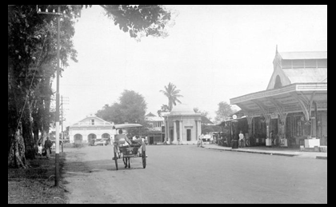

Sejarah
Sejarah di Provinsi Bengkulu didukung oleh beberapa sumber-sumber bersejarah. Sumber sejarah tersebut terdiri atas sumber lisan, sumber benda, sumber tulisan, dan sumber bangunan di Provinsi Bengkulu. Secara umum, sejarah di Provinsi Bengkulu dapat dibagi menjadi:
- Masa Pra-Islam
- Masa Masuknya Islam
- Masa Kolonial
- Masa Setelah Kemerdekaan.
Pra-Islam
Pada zaman prasejarah, daerah Bengkulu diperkirakan sudah dihuni oleh manusia. Para pendatang dari Asia berbaur dengan manusia purba sekitar 4000 – 2000 SM. Sebagian masuk ke pedalaman, sementara yang lain menghuni daerah pantai. Penyebaran manusia tersebut merupakan cikal bakal Suku Bangsa Neo-Malayan. Beberapa suku bangsa itu antara lain: Suku Rejang (Rejang Lebong dan Bengkulu Utara), Suku Serawai / Pasemah (Bengkulu Selatan), Suku Kaur (Bintuhan), Suku Lembak di Kota Bengkulu dan sekitar Kota Curup). Bengkulu (Kota Bengkulu) dan suku Katahun (Muko-muko). Beberapa bukti dari masa prasejarah menunjukkan bahwa Bengkulu pernah dihuni oleh manusia prasejarah yang memiliki kebudayaan dan tradisi megalitik. Tradisi megalitik adalah tradisi pemujaan terhadap batu-batu besar sebagai perwujudan dari roh nenek moyang. Batu-batu besar yang menunjukkan tradisi megalitik di Bengkulu hingga kini dapat diamati di wilayah Kabupaten Rejang Lebong dan Bengkulu Selatan.
Awal Kedatangan Islam
Islam diperkirakan masuk ke wilayah Bengkulu pada abad XV (dari Jawa). Sebelum masuknya Islam, masyarakat Bengkulu telah mengenal sistem tatanan masyarakat "Negara Suku", yakni wilayah-wilayah kecil yang dipimpin oleh pimpinan tertinggi kepala suku. Masuknya para pedagang dan utusan-utusan Islam ke wilayah Bengkulu berhasil membuat masyarakat lokal mengembangkan tatanan masyarakat yang tadinya berbentuk "Negara Suku" menjadi berbentuk kesultanan atau kerajaan. Kesultanan-kesultanan di Bengkulu yang berkembang pada periode Islam yang pernah disebutkan dalam sumber tambo dan sejarah ialah: Kerajaan Selebar, Kerajaan Sungai Lemau, dan Kerajaan Sungai Serut.
Masuknya Kolonialisme
- Tahun 1664 – VOC memasuki Bengkulu dan mendirikan dewan perwakilan di Bengkulu. enam tahun kemudian Belanda menutup sementara kantornya dan dibuka kembali tahun 1824.
- 24 Juni 1685 -- Inggris masuk ke Bengkulu. Mereka mendarat dan disambut oleh agen niaganya di Pulau Tikus (1 km dari kota pusat kota Bengkulu). Mereka tidak masuk ke pelabuhan Selebar (daerah Pulau Baai) karena kapal Sultan Banten dan kapal Belanda sedang bersandar di sana.
- 24 Juni 1685 -- Inggris masuk ke Bengkulu. Mereka mendarat dan disambut oleh agen niaganya di Pulau Tikus (1 km dari kota pusat kota Bengkulu). Mereka tidak masuk ke pelabuhan Selebar (daerah Pulau Baai) karena kapal Sultan Banten dan kapal Belanda sedang bersandar di sana.
- 16 Agustus 1695 -- Perjanjian antara Inggris dan Bengkulu ditandatangani. Isinya menyangkut tentang monopoli lada, perizinan membangun loji, dan keputusan dalam mengadili penduduk yang berbuat salah. Inggris terus memperluas wilayahnya sampai ke Muko-muko.
- Tahun 1692 -- Inggris mendirikan pos di daerah Triamang, Lais, Ketahun, Ipuh, Bantal, Seblat (1700).
- Tahun 1701 -- Inggris memperluas daerah ke wilayah Seluma, Manna, Kaur, dan Krui.
- Tahun 1718 -- Inggris membangun Benteng York dan Benteng Marlborough. Benteng tersebut merupakan upaya Rakyat Bengkulu merupakan ancaman bagi Inggris. Di Bantal, Muko-muko, pemberontakan rakyat dipimpin Sultan Mansyur dan Sultan Sulaiman. Itu sebabnya Inggris merasa perlu membangun benteng tersebut. Pemberontakan itu (1719) membuat Inggris kawatir dan akhirnya meninggalkan Bengkulu.
- Tahun 1724 -- Inggris kembali lagi. Dengan perjanjian yang lebih lunak yang di tanda tangani pada 17 April 1724
- 15 Desember 1793 -- Captain Hamilton, pimpinan Angkatan Laut Inggris dibunuh rakyat Bengkulu. Dan pada 1807 rakyat Bengkulu berhasil membunuh Residen Thomas Parr.
- 17 Maret 1824 -- Muncul perjanjian antara Belanda yang disebut Traktaat London (Perjanjian London) yang berisikan pertukaran daerah koloni antara Inggris dan Belanda. Dalam perjanjian tersebut, Bengkulu diserahkan kepada Belanda oleh Inggris dan Belanda menyerahkan kekuasaannya terhadap Singapura kepada Inggris.
Dalam perjalanan sejarah Indonesia, Provinsi Bengkulu juga mempunyai peranan yang menonjol. Menurut catatan Prof. DR. Haji Abdullah Siddik (Sejarah Bengkulu: 1500-1990, Balai Pustaka, 1996), pada era penjajahan, Bengkulu sudah menyita perhatian negara-negara kolonilis Barat, terutama karena hasil buminya yang melimpah. Tahun 1511 para pedagang Eropa terutama Inggris dan Belanda mulai ramai melakukan pelayaran menyusuri pantai Barat Sumatera dari Aceh, melalui Selatan Sunda lalu ke Banten. Tahun 1685, dengan alasan perluasan kebun lada Inggris mulai menetap di Bengkulu. Saat itulah dimulai era tanam paksa lada terhadap rakyat. Tercatat, Inggris bertahan selama 139 tahun di Bengkulu. Penderitaan rakyat Bengkulu terus berlanjut dengan peralihan kekuasaan dari Inggris kepada Belanda, tahun 1724, sebagai konsekwensi perjanjian mereka (Traktat London). Bahkan kekejaman penjajah memuncak saat Jepang menguasai Tanah Air.Pendudukan tanpa rasa kemanusiaan itu tidak hanya melahirkan penderitaan bagi rakyat. Tapi juga membangkitkan perlawanan akibat telah diinjak-injaknya nilai luhur dan tradisi luhur masyarakat sekitar. Lebih seabad kemudian, aksi heroik menentang penjajahan masih terus bisa disaksikan. Sumbangsih rakyat Bengkulu terhadap kemerdekaan Indonesia tidak bisa begitu saja dihilangkan. Termasuk dalam periode mempertahankan kemerdekaan.23 Februari 1942 Jepang masuk kota Curup dan terus ke kota Bengkulu dan banyak membantai rakyat.
Masa Setelah Kemerdekaan
Bengkulu yang ditetapkan sebagai provinsi pada 18 November 1968 itu, kini memiliki sepuluh kabupaten/kota, yakni Kota Bengkulu, Kabupaten Rejang Lebong, Kabupaten Lebong, Kabupaten Kepahiang, Kabupaten Bengkulu Utara, Kabupaten Mukomuko, Kabupaten Bengkulu Tengah, Kabupaten Bengkulu Selatan, Kabupaten Kaur dan Kabupaten Seluma. Bengkulu juga menjadi salah satu mata rantai yang selalu dicatat oleh sejarah. Salah satu alasannya karena di bumi Rafflesia ini pula, Soekarno presiden pertama Republik Indonesia pernah menjalani pengasingan oleh pemerintah kolonial, selama empat tahun, 1938-1942. Seokarno kemudian menemukan cintanya di sini. Dia terpikat hati dengan salah seorang putri warga Muahammadiyah bernama Fatmawati. Putri yang dilahirkan di Desa Malabero, Kota Bengkulu, 5 Februari 1923 ini merupakan anak tunggal dari pasangan Hasan Din (Tokoh Muhammadiyah Bengkulu) dan Siti Chadijah. Seokarno menikahi Fatmawati tahun 1943, ketika itu Fatmawati tepat menginjak usia 20 tahun. Pasangan itu dikaruniai lima anak, yakni Guntur Soekarnoputra, Megawati Soekarnoputri, Rachmawati Soekarnoputri, Sukmawati Soekarnoputri dan Guruh Soekarnoputra. Ketika Seokarno menjadi Presiden Republik Indonesia, Ibu Fatmawati menjadi seorang ibu negara. Bendera pusaka merah-putih yang dikibarkan saat Proklamasi 17 Agustus 1945 tak lain adalah jahitan tangan Bu Fat. Pada tanggal 18 November 1968, atas dasar UU No. 9/1967 Junkto Peraturan Pemerintah No. 20/1968, Keresidenan Bengkulu diresmikan menjadi salah satu Provinsi di Republik Indonesia yang ke-26 dengan Ali Amin sebagai Gubernur Bengkulu.